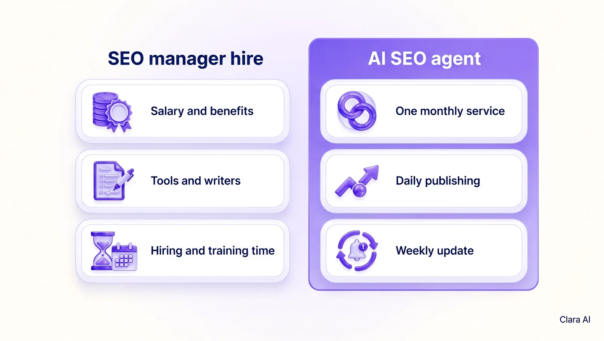

Whether an AI SEO agent costs less than hiring an SEO manager depends on what you count. An agent is one monthly service that researches, writes, publishes, indexes and reports. A hire is a salary plus tools, writers, recruiting time and management, and results depend on one person's capacity. For most small B2B teams the agent has the smaller commitment and the faster start, while a human still wins on judgement and brand.
This post compares the two on cost lines, speed, output and risk. It does not quote prices, because salaries and fees vary by city, seniority and scope. Instead it gives you the questions to ask, so you can put your own numbers next to each option.
The salary is the visible line, and it is rarely the whole bill. When you add up a full year, a hire usually carries these costs:
A strong manager brings strategy, relationships and judgement, and that has real value. The question is whether a small team needs that full seat, or mostly needs steady execution.
An AI SEO agent is sold as a managed monthly service. Instead of several separate lines, the work sits inside one commitment: topic research, writing, publishing, indexing requests, tracking and a weekly update. At Clara AI we agree the priorities with you on a call, work from the facts you approve, and show you a first demo within 7 days.

For a fair comparison, ask every option the same three questions: what is published each month, who checks the facts, and what happens if results are slow.
| Factor | SEO manager hire | AI SEO agent |
|---|---|---|
| Commitment | Salary, tools and writers, fixed and variable | One monthly service |
| Time to start | Recruiting, notice period, onboarding | Call, share facts, first demo within 7 days |
| Publishing pace | Limited by one person's week | Daily, from approved facts |
| Strategy and judgement | Strong, especially for brand and positioning | Guided by your priorities and weekly review |
| Technical SEO | Can lead complex site work | Handles the routine checks; large rebuilds still need a developer |
| Continuity | Leaves with the person | Runs on a documented process |
| Main risk | A wrong hire or a long ramp-up | Weak input facts or unclear priorities |
A hire makes sense when SEO is central to your growth and you can keep a person busy and well supported. Choose a manager when:
Even then, an agent can handle the daily publishing while your manager focuses on strategy.
An agent fits when your main gap is consistent output rather than a leadership seat. It is a good match when:
On our own site, the agent published a new post every day, and organic sessions rose 28% from 10–25 Oct vs 24 Sep–9 Oct 2026. The full story is in our AI SEO agent case study, and the choice between formats is covered in AI SEO agent vs SEO agency vs SEO tool.
SEO takes time whichever route you pick. Google's SEO starter guide notes that changes can take from several hours to several months to show. Do not judge a hire or an agent on week two. Look for a steady rhythm instead:
The difference is the starting line. A hire spends part of the first quarter recruiting and learning your business, while an agent starts from your approved facts. To see what the agent publishes, read what an AI SEO agent is.
Write down what you spend today on SEO tools, writers and management time, then ask each option for the same output: pages published per month, how they are fact-checked, how indexing is requested and what you receive each week. Compare the full picture, not the headline number. If your main need is consistent publishing and tracking, start with our AI SEO Agent. If you also want to reach buyers directly, you can pair it with our AI LinkedIn Outreach Agent.
It is a fit if you sell to businesses and want steady SEO without building a team. It is not a fit if you already run a full in-house SEO team or want a one-off audit. Tell us what you sell and we aim to show you a first demo within 7 days.